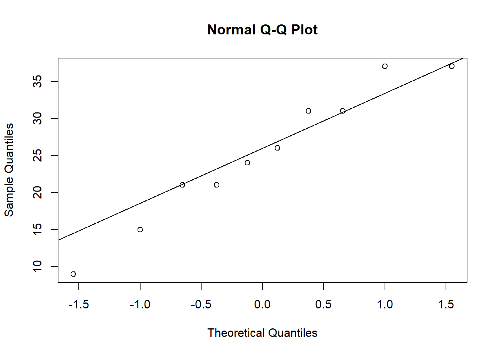
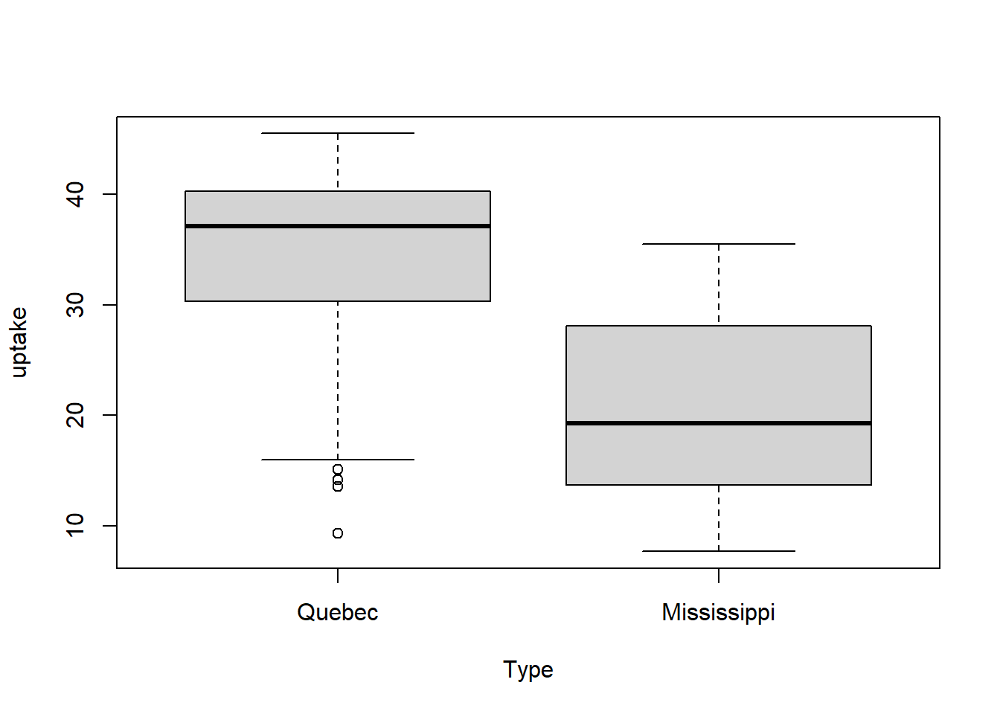
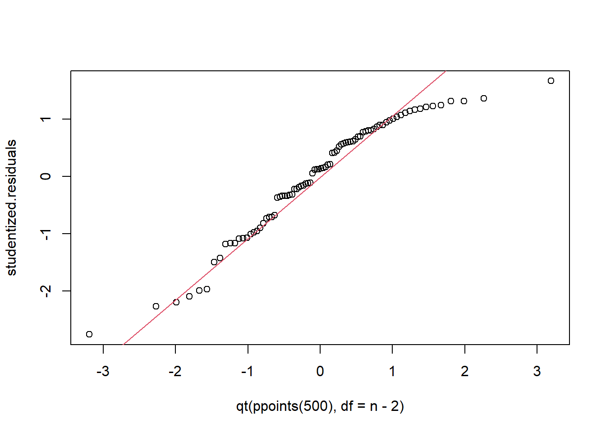

Chapter 3 Introduction to Linear Models
In this section we define linear models, provide simple examples, and analyze linear models for one- and two-sample problems.
3.1 Defining the linear model
Every linear model defines a linear relationship between an independent variable \(Y\) and a dependent variable \(X\), including a random term \(\epsilon\): \[\begin{equation} Y = X\beta + \epsilon \tag{3.1} \end{equation}\] Usually, \(X\) is a fixed or non-random variable, while \(\epsilon\) is a random variable representing variation due to a random sampling mechanism, so that \(Y\) is a random outcome. Further, in (3.1) \(Y = (Y_1, \ldots, Y_n)^\top\) is an \(n\times 1\) vector of outcomes/responses, \(X\) is an \(n\times p\) matrix of fixed variables/covariates (\(p<n\)), \(\epsilon = (\epsilon_1, \ldots, \epsilon_n)^\top\) is an \(n\times 1\) vector of random variables, and \(\beta = (\beta_1, \ldots, \beta_p)^{\top}\) is a \(p\times 1\) coefficient vector of unknown parameters.
The least-squares model or just called the linear model is the above model with few or no additional assumptions although, to estimate the unknown parameter \(\beta\), which characterizes the relationship between \(X\) and \(Y\), assuming \(E(\epsilon_i) = 0\) is very helpful and usually reasonable.
The Gauss-Markov model—which we will tacitly use throughout the course and examine in detail at the end of the semester—makes the assumptions \(E(\epsilon_i) = 0\), \(E(\epsilon_i^2) = \sigma^2\), which means the ``error” term \(\epsilon\) has the same variance for each random sample (homogeneous or constant variance), and \(E(\epsilon_i\epsilon_j)=0\). Or, in other words, the last two assumptions may be written \(Cov(\epsilon) = \sigma^2 I_{n}\) where \(I_n\) is the \(n\times n\) identity matrix.
3.2 Gauss-Markov model for one sample
Let \(P\) be a normal population with mean \(\beta\) and variance \(\sigma^2\). Let \(Y_i\stackrel{iid}{\sim}P\). Then, we may write \[\begin{equation} \begin{aligned} Y_i &= \beta x_i + \epsilon_i, \quad i = 1,\ldots, n, \,\,\text{or}\\ Y &= X\beta + \epsilon \end{aligned} \end{equation}\] where \(x_i = 1\), so that \(X = (1, 1, ..., 1)^{\top}\) is an \(n\times 1\) vector of ones, and where \(\epsilon_i\stackrel{iid}{\sim}N(0,\sigma^2)\). This shows the Gauss-Markov model contains the one-sample normal population inference problem.
For inference on the population mean \(\beta\) we typically consider the point estimator \(\hat\beta = \overline Y\), the sample mean. And, we evaluate the usual one-sample Student’s \(t\) test of \(H_0:\beta = \beta_0\) vs. \(H_a:\beta\ne\beta_0\) by comparing the test statistic \[T = \frac{\overline Y - \beta_0}{\sqrt{S^2/n}}\] to quantiles of a Student’s \(t\) distribution with \(n-1\) df, where \(S^2 = (n-1)^{-1}\sum_{i=1}^n(Y_i - \overline Y)^2\).
A common theme in the study and use of linear models is ``model-checking”. The idea is to us the data to interrogate the Gauss-Markov assumptions: linearity, normality, and constant variance (and sometimes independence). In the one-sample problem linearity is of no concern because \(x\) is constant, so there’s no relationship between \(X\) and \(Y\) to check for linearity. Normality may be checked by constructing a qq-plot of the residuals \(\hat\epsilon_i = Y_i - \hat Y_i\) where \(\hat Y_i = \hat\beta x_i\); in this case, \(\hat\epsilon_i = Y_i - \overline Y\). Often times data exhibit non-homogeneous variance in the sense that the variance increases or decreases in \(X\). Again, this kind of non-homogeneity is not relevant in the one-sample problem. Finally, in data sets with time or space variation (like gasoline prices in Ames from 2021-2022), we may suspect non-independence of \(\epsilon_i\)’s. This kind of time-series dependence may be checked using a serial correlation plot; see below.
Example: A horticulturist plants 500 seeds of centaurea cyanus in a 10 foot by 1 foot plot of clay-type soil in 1 foot by one foot squares. After 6 weeks she records the number of sprouted plants in each square, finding \[37\,\,\, 24\,\,\, 31\,\,\, 21\,\,\, 9\,\,\, 21\,\,\, 15\,\,\, 37\,\,\, 31\,\,\, 26.\] Assuming a normal population, she wants to infer the true average number of sprouted (germinated) seeds per one-foot by one-foot plot of fifty in clay-type soil.
In particular, she’d like to know if the true mean is at least 25. She will not make a wholesale purchase of this particular seed unless she is convinced the true mean is at least 25.
The horticulturist’s Gauss-Markov model has \(Y_i\) equal to the recorded number of sprouts for sub-plots \(i=1, \ldots, 10\), and where \(x_i = 1\) for each. The following t-test concludes (at level 0.05) that the true mean is quite plausibly less than 25.
y <- c(37, 24, 31, 21, 9, 21, 15, 37, 31, 26)
ybar <- mean(y)
ybar## [1] 25.2s2 <- var(y)
s2## [1] 83.28889n <- length(y)
T <- (ybar - 25)/sqrt(s2/n)
T## [1] 0.06930051qt(0.95,n-1)## [1] 1.8331131-pt(T,n-1)## [1] 0.4731329ybar+qt(c(0.025,0.975),n-1)*sqrt(s2/n)## [1] 18.67146 31.72854Further, we can interrogate the normality (Gaussianity) assumption using a qq-plot. The plot reveals no concerns about the normality assumption.

In this particular example, we may be concerned that sub-plots next to each other may have (spatially) correlated responses. One way to evaluate this is to compute the correlation between adjacent pairs. The observed (sample) correlation is only about \(12\%\), not high enough to suspect spatial non-independence.
y <- c(37, 24, 31, 21, 9, 21, 15, 37, 31, 26)
n <- length(y)
y_adj <- c(24, 31, 21, 9, 21, 15, 37, 31, 26)
cor(y[1:(n-1)], y_adj)## [1] 0.12751453.3 Gauss-Markov model for comparing two samples
Now suppose we have two normal populations, with the same variances, and we want to compare possibly different means. For some usual notation we might say \(X_{1,i}\stackrel{iid}{\sim}N(\mu_1, \sigma^2)\) for \(i=1, \ldots, n_1\) and \(X_{2,j}\stackrel{iid}{\sim}N(\mu_2, \sigma^2)\) for \(j=1, \ldots, n_2\). There are (at least) two ways to represent this data in linear model format. Either way, we let \(Y = (X_{1,1}, \ldots, X_{1,n_1}, X_{2,1}, \ldots, X_{2,n_2})^\top\) be the vector of \(n = n_1+n_2\) responses. The means model uses design matrix \(X = (X_1, X_2)\) where \(X_1\) and \(X_2\) are \(n\times 1\) column vectors with \(X_1 = (1_{n_1}^\top, 0_{n_2}^\top)^{\top}\) and \(X_2 = (0_{n_1}^\top, 1_{n_2}^\top)^{\top}\). Suppose \(n_1 = n_2 = 10\); then, \(X\) looks like the following:
X = cbind(c(rep(1,10),rep(0,10)), c(rep(0,10),rep(1,10)))
X## [,1] [,2]
## [1,] 1 0
## [2,] 1 0
## [3,] 1 0
## [4,] 1 0
## [5,] 1 0
## [6,] 1 0
## [7,] 1 0
## [8,] 1 0
## [9,] 1 0
## [10,] 1 0
## [11,] 0 1
## [12,] 0 1
## [13,] 0 1
## [14,] 0 1
## [15,] 0 1
## [16,] 0 1
## [17,] 0 1
## [18,] 0 1
## [19,] 0 1
## [20,] 0 1The product \(X\beta\) is the vector \((\beta_1 1_{n_1}^\top, \beta_2 1_{n_2}^\top)^\top\). Taking the expectation of \(X\beta + \epsilon\) we get \(E(Y) = (\beta_1 1_{n_1}^\top, \beta_2 1_{n_2}^\top)^\top\). Therefore, \((\beta_1, \beta_2) = (\mu_1, \mu_2)\). In other words, the linear model coefficient vector is identical to the group means.
The second way to formulate the linear model is to encode the design matrix using the effects model. Let \(X = (1_n^\top, (1_{n_1}^\top, 0_{n_2}^\top))^\top\), or, in other words:
X = cbind(rep(1,20), c(rep(1,10),rep(0,10)))
X## [,1] [,2]
## [1,] 1 1
## [2,] 1 1
## [3,] 1 1
## [4,] 1 1
## [5,] 1 1
## [6,] 1 1
## [7,] 1 1
## [8,] 1 1
## [9,] 1 1
## [10,] 1 1
## [11,] 1 0
## [12,] 1 0
## [13,] 1 0
## [14,] 1 0
## [15,] 1 0
## [16,] 1 0
## [17,] 1 0
## [18,] 1 0
## [19,] 1 0
## [20,] 1 0In that case, \(E(Y) = E(X\beta+\epsilon) = ((\beta_1 + \beta_2)1_{n_1}^\top, \beta_1 1_{n_2}^\top)^\top\). That means \(\beta_1 + \beta_2 = \mu_1\) and \(\beta_1 = \mu_2\). Or, equivalently, \(\beta_1 = \mu_2\) and \(\beta_2 = \mu_1 - \mu_2\). For this design, testing \(\beta_2=0\) is equivalent to testing for no difference in population means.
Example: The following is an analysis of carbon dioxide uptake rates of Echinochloa crus-galli grown in Quebec and Mississippi.
boxplot(uptake~Type, data = CO2)
# means model
hat.beta1 <- mean(CO2$uptake[CO2$Type == 'Quebec'])
hat.beta1## [1] 33.54286hat.beta2 <- mean(CO2$uptake[CO2$Type == 'Mississippi'])
hat.beta2## [1] 20.88333S2 <- (var(CO2$uptake[CO2$Type == 'Quebec']) + var(CO2$uptake[CO2$Type == 'Mississippi'])) / 2
S2## [1] 77.33465n <- length(CO2$uptake)
t = (hat.beta1 - hat.beta2)/sqrt(S2*(1/(n/2) + 1/(n/2)))
t## [1] 6.5969011-pt(t, n-2)## [1] 1.917343e-09qt(c(0.025,0.975),n-2)## [1] -1.989319 1.989319residuals <- c((CO2$uptake[CO2$Type == 'Quebec'] - hat.beta1), CO2$uptake[CO2$Type == 'Mississippi'] - hat.beta2)
studentized.residuals <- residuals / sqrt(S2)
qqplot(x = qt(ppoints(500), df = n-2), studentized.residuals)
qqline(studentized.residuals, distribution = function(p) qt(p, df = n-2), probs = c(0.2, 0.8), col = 2)
We conduct a two-sample t-test (assuming equal variances) and conclude there is a substantial difference in CO2 uptake of this grass species between the two locations. Inspection of the qq-plot reveals no concerns about normality.
# Effects Model
summary(lm(uptake~Type, data = CO2))##
## Call:
## lm(formula = uptake ~ Type, data = CO2)
##
## Residuals:
## Min 1Q Median 3Q Max
## -24.243 -6.243 1.187 7.027 14.617
##
## Coefficients:
## Estimate Std. Error t value Pr(>|t|)
## (Intercept) 33.543 1.357 24.719 < 2e-16 ***
## TypeMississippi -12.660 1.919 -6.597 3.83e-09 ***
## ---
## Signif. codes: 0 '***' 0.001 '**' 0.01 '*' 0.05 '.' 0.1 ' ' 1
##
## Residual standard error: 8.794 on 82 degrees of freedom
## Multiple R-squared: 0.3467, Adjusted R-squared: 0.3387
## F-statistic: 43.52 on 1 and 82 DF, p-value: 3.835e-09M <- lm(uptake~Type, data = CO2)
model.matrix(M)## (Intercept) TypeMississippi
## 1 1 0
## 2 1 0
## 3 1 0
## 4 1 0
## 5 1 0
## 6 1 0
## 7 1 0
## 8 1 0
## 9 1 0
## 10 1 0
## 11 1 0
## 12 1 0
## 13 1 0
## 14 1 0
## 15 1 0
## 16 1 0
## 17 1 0
## 18 1 0
## 19 1 0
## 20 1 0
## 21 1 0
## 22 1 0
## 23 1 0
## 24 1 0
## 25 1 0
## 26 1 0
## 27 1 0
## 28 1 0
## 29 1 0
## 30 1 0
## 31 1 0
## 32 1 0
## 33 1 0
## 34 1 0
## 35 1 0
## 36 1 0
## 37 1 0
## 38 1 0
## 39 1 0
## 40 1 0
## 41 1 0
## 42 1 0
## 43 1 1
## 44 1 1
## 45 1 1
## 46 1 1
## 47 1 1
## 48 1 1
## 49 1 1
## 50 1 1
## 51 1 1
## 52 1 1
## 53 1 1
## 54 1 1
## 55 1 1
## 56 1 1
## 57 1 1
## 58 1 1
## 59 1 1
## 60 1 1
## 61 1 1
## 62 1 1
## 63 1 1
## 64 1 1
## 65 1 1
## 66 1 1
## 67 1 1
## 68 1 1
## 69 1 1
## 70 1 1
## 71 1 1
## 72 1 1
## 73 1 1
## 74 1 1
## 75 1 1
## 76 1 1
## 77 1 1
## 78 1 1
## 79 1 1
## 80 1 1
## 81 1 1
## 82 1 1
## 83 1 1
## 84 1 1
## attr(,"assign")
## [1] 0 1
## attr(,"contrasts")
## attr(,"contrasts")$Type
## [1] "contr.treatment"The lm function in R fits linear models and tests \(\beta_j = 0\) for each \(j=1, \ldots, p\). Note that the default design is a form of effects model, where the first level of the categorical variable is the baseline or reference level, so that the intercept term \(\beta_1\) is identified with its mean, while the other \(\beta\)’s become effects, the differences \(\mu_2 - \mu_1\) and so on…
3.4 Pairwise testing and Bonferroni correction
The two-sample t-test is appropriate for comparing two populations; for example, when experimenters compare two interventions/treatments in terms of mean effects. But, the two-sample t-test procedure does not generalize well to comparing 3 or more populations, i.e., more interventions. Let’s see why not, and then consider what we could do instead.
Consider \(k\) treatments corresponding to \(k\) populations. Two sample t-tests may be used with the null hypothesis \(H_0:\mu_i = \mu_j\), \(i,j = 1, \ldots, k\), \(i\ne j\). There are \({k \choose 2}\) pairs of treatments, so there are the same number of tests to conduct. Now, suppose all the means are equal, i.e. the treatments are indistinguishiable on the basis of mean. If each test is conducted at level \(\alpha\) then the chance of at least 1 type 1 error occurring is approximately \(1-(1-\alpha)^{{k \choose 2}}\), that is, if all tests are independent. For large \(k\), this familywise type 1 error (type 1 error for all the tests) gets close to 1! In other words, the strategy of evaluating the hypothesis \(H_0:\text{all }\mu_i\text{'s are equal}\) by pairwise testing is not effective.
Several modifications are available to deal with this multiple testing problem. We’ll discuss two: Bonferroni and Benjamini-Hochberg adjustments. The Bonferroni adjustment requires the Type-1 error level \(\alpha\) of each test be changed to \(\alpha^\star = \alpha/k\) where \(k\) is the total number of tests. By the same probability calculation (assuming independence of tests) it follows that the family-wise type 1 error probability using the Bonferroni procedure is about \(\alpha\): \[\begin{align*} P(\text{at least one rejection given }H_0\text{ true}) &= 1-P(\text{no rejections given }H_0\text{ true})\\ & \stackrel{ind.}{=} 1-(1-\frac{\alpha}{k})^k\\ & \approx 1 - e^{-\alpha}\quad \text{for large k}\\ & \approx 1 - (1-\alpha) = \alpha \quad \text{for small }\alpha. \end{align*}\]
The downside to Bonferroni is that when \(k\) is large each test has a very, very small chance of rejecting the null. In other words, each test has very low power. This inspired other procedures, like Benjamini-Hochberg (BH). Rather than controlling the family-wise type 1 error rate the BH procedure makes a compromise, and seeks to limit something called the false-discovery rate (FDR). Let \(V\) be the number of tests out of \(k\) that reject the null incorrectly, and let \(R\) be the number of tests out of \(k\) that reject the null. Then, FDR is defined as \(E(\frac{V}{R}|R>0)P(R>0)\). In words, the FDR is controlling the proportion of rejections that are incorrect out of all rejections, rather than out of all tests (like FWER does). If we did 1000 tests and rejected 40 nulls and controlled FDR at \(5\%\) we would expect 2 of the 40 rejections to be false rejections. To control FDR, the BH procedure instructs us to:
1. Sort the realized p-values from least to greatest \(p_{(1)}, p_{(2)}, ..., p_{(k)}\)
2. Find the largest \(\ell\) such that \(p_{(\ell)}\leq \frac{\ell}{k}\alpha\).
3. Reject all nulls corresponding to p-values \(p_{(1)}\) to \(p_{(\ell)}\).
3.4.1 Example: Co2 uptake in Echinochloa crus-galli
Consider the four interventions on the echinochloa grass formed by crossing the factors location and chilling with levels Mississippi/Quebec and chilled/non-chilled. We must make 6 pairwise comparisons, which we do below, using uncorrected, Bonferroni-corrected, and BH-corrected two-sample t-tests (assuming equal variances), and based on \(\alpha = 0.05\).
library(datasets)
xbar1 <- mean(CO2$uptake[CO2$Type=='Quebec' & CO2$Treatment == "chilled"])
xbar2 <- mean(CO2$uptake[CO2$Type=='Quebec' & CO2$Treatment == "nonchilled"])
xbar3 <- mean(CO2$uptake[CO2$Type=='Mississippi' & CO2$Treatment == "chilled"])
xbar4 <- mean(CO2$uptake[CO2$Type=='Mississippi' & CO2$Treatment == "nonchilled"])
t1 <- (xbar1 - xbar2)/sqrt((0.5*(var(CO2$uptake[CO2$Type=='Quebec' & CO2$Treatment == "chilled"]) + var(CO2$uptake[CO2$Type=='Quebec' & CO2$Treatment == "nonchilled"])))*(1/21 + 1/21))
t2 <- (xbar1 - xbar3)/sqrt((0.5*(var(CO2$uptake[CO2$Type=='Quebec' & CO2$Treatment == "chilled"]) + var(CO2$uptake[CO2$Type=='Mississippi' & CO2$Treatment == "chilled"])))*(1/21 + 1/21))
t3 <- (xbar1 - xbar4)/sqrt((0.5*(var(CO2$uptake[CO2$Type=='Quebec' & CO2$Treatment == "chilled"]) + var(CO2$uptake[CO2$Type=='Mississippi' & CO2$Treatment == "nonchilled"])))*(1/21 + 1/21))
t4 <- (xbar2 - xbar3)/sqrt((0.5*(var(CO2$uptake[CO2$Type=='Quebec' & CO2$Treatment == "nonchilled"]) + var(CO2$uptake[CO2$Type=='Mississippi' & CO2$Treatment == "chilled"])))*(1/21 + 1/21))
t5 <- (xbar2 - xbar4)/sqrt((0.5*(var(CO2$uptake[CO2$Type=='Quebec' & CO2$Treatment == "nonchilled"]) + var(CO2$uptake[CO2$Type=='Mississippi' & CO2$Treatment == "nonchilled"])))*(1/21 + 1/21))
t6 <- (xbar3 - xbar4)/sqrt((0.5*(var(CO2$uptake[CO2$Type=='Mississippi' & CO2$Treatment == "chilled"]) + var(CO2$uptake[CO2$Type=='Mississippi' & CO2$Treatment == "nonchilled"])))*(1/21 + 1/21))
p1 <- 2*(1-pt(abs(t1),40))
p2 <- 2*(1-pt(abs(t2),40))
p3 <- 2*(1-pt(abs(t3),40))
p4 <- 2*(1-pt(abs(t4),40))
p5 <- 2*(1-pt(abs(t5),40))
p6 <- 2*(1-pt(abs(t6),40))
p1## [1] 0.2348577p2## [1] 2.000916e-08p3## [1] 0.03471652p4## [1] 1.297742e-10p5## [1] 0.001011226p6## [1] 2.355328e-06sorted <- cbind(1:6, round(c(p1,p2,p3,p4,p5,p6), 4))
sorted <- sorted[order(sorted[,2]),]
cbind(sorted,c(0.05/6,0.05*2/6,0.05*3/6,0.05*4/6,0.05*5/6,0.05*6/6), c(sorted[1,2] <= 0.05*1/6, sorted[2,2] <= 0.05*2/6, sorted[3,2] <= 0.05*3/6, sorted[4,2] <= 0.05*4/6, sorted[5,2] <= 0.05*5/6, sorted[6,2] <= 0.05*6/6), rep(0.05/6,6),
c(sorted[1,2] <= 0.05/6, sorted[2,2] <= 0.05/6, sorted[3,2] <= 0.05/6, sorted[4,2] <= 0.05/6, sorted[5,2] <= 0.05/6, sorted[6,2] <= 0.05/6))## [,1] [,2] [,3] [,4] [,5] [,6]
## [1,] 2 0.0000 0.008333333 1 0.008333333 1
## [2,] 4 0.0000 0.016666667 1 0.008333333 1
## [3,] 6 0.0000 0.025000000 1 0.008333333 1
## [4,] 5 0.0010 0.033333333 1 0.008333333 1
## [5,] 3 0.0347 0.041666667 1 0.008333333 0
## [6,] 1 0.2349 0.050000000 0 0.008333333 0Using uncorrected tests we would reject the null hypothesis in all but the first test. We actually get the same result using the BH procedure. but, the Bonferroni procedure is more conservative and does not allow us to reject the null in the 1st or 3rd tests.
3.5 Linear Models for more than two treatments (populations)
We may generalize the “means model” and “effects model” constructions to apply the Gauss-Markov model to data sets with several treatments, as in the CO2 data set considered above. Recall that the CO2 data set has 84 observations, 21 in each of four groups: Quebec-chilled, Quebec-nonchilled, Mississippi-chilled, and Mississippi-nonchilled. If we sort the response vector to correspond to these categories, we can construct the design matrix as follows: \(X = (X_1, X_2, X_3, X_4)\) where \(X_1\) is the \(84\times 1\) column vector combined by stacking a \(21\times 1\) vector of 1’s atop a \(63\times 1\) vector of 0’s. The remaining columns of \(X\) are formed analogously, with the 21 1 values occupying the 22nd through 42nd spots, the 43rd through 63rd, and the 64th through 84th, respectively.
X <- cbind( c(rep(1,21),rep(0,21),rep(0,21),rep(0,21)),
c(rep(0,21),rep(1,21),rep(0,21),rep(0,21)),
c(rep(0,21),rep(0,21),rep(1,21),rep(0,21)),
c(rep(0,21),rep(0,21),rep(0,21),rep(1,21)))This construction is a “means model” matrix because the coefficient vector \(\beta\) is identified with the four group means. That is, \(X\beta = (\beta_1 1_{21\times1}^\top, \beta_2 1_{21\times1}^\top, \beta_3 1_{21\times1}^\top, \beta_4 1_{21\times1}^\top)^\top\). So, \(\beta_j = \mu_j\) for \(j=1,...,4\).
There are many ways to define an “effects model” for the CO2 dataset. Recall that R uses an effects model parametrization by default. Let’s fit a linear model in R and see what model matrix R constructs.
library(datasets)
CO2subset <- data.frame(CO2$Type, CO2$Treatment, CO2$uptake)
my.lm <- lm(CO2.uptake~CO2.Type+CO2.Treatment, data = CO2subset)
model.matrix(my.lm)## (Intercept) CO2.TypeMississippi CO2.Treatmentchilled
## 1 1 0 0
## 2 1 0 0
## 3 1 0 0
## 4 1 0 0
## 5 1 0 0
## 6 1 0 0
## 7 1 0 0
## 8 1 0 0
## 9 1 0 0
## 10 1 0 0
## 11 1 0 0
## 12 1 0 0
## 13 1 0 0
## 14 1 0 0
## 15 1 0 0
## 16 1 0 0
## 17 1 0 0
## 18 1 0 0
## 19 1 0 0
## 20 1 0 0
## 21 1 0 0
## 22 1 0 1
## 23 1 0 1
## 24 1 0 1
## 25 1 0 1
## 26 1 0 1
## 27 1 0 1
## 28 1 0 1
## 29 1 0 1
## 30 1 0 1
## 31 1 0 1
## 32 1 0 1
## 33 1 0 1
## 34 1 0 1
## 35 1 0 1
## 36 1 0 1
## 37 1 0 1
## 38 1 0 1
## 39 1 0 1
## 40 1 0 1
## 41 1 0 1
## 42 1 0 1
## 43 1 1 0
## 44 1 1 0
## 45 1 1 0
## 46 1 1 0
## 47 1 1 0
## 48 1 1 0
## 49 1 1 0
## 50 1 1 0
## 51 1 1 0
## 52 1 1 0
## 53 1 1 0
## 54 1 1 0
## 55 1 1 0
## 56 1 1 0
## 57 1 1 0
## 58 1 1 0
## 59 1 1 0
## 60 1 1 0
## 61 1 1 0
## 62 1 1 0
## 63 1 1 0
## 64 1 1 1
## 65 1 1 1
## 66 1 1 1
## 67 1 1 1
## 68 1 1 1
## 69 1 1 1
## 70 1 1 1
## 71 1 1 1
## 72 1 1 1
## 73 1 1 1
## 74 1 1 1
## 75 1 1 1
## 76 1 1 1
## 77 1 1 1
## 78 1 1 1
## 79 1 1 1
## 80 1 1 1
## 81 1 1 1
## 82 1 1 1
## 83 1 1 1
## 84 1 1 1
## attr(,"assign")
## [1] 0 1 2
## attr(,"contrasts")
## attr(,"contrasts")$CO2.Type
## [1] "contr.treatment"
##
## attr(,"contrasts")$CO2.Treatment
## [1] "contr.treatment"Based on the model matrix, we see that R defines three coefficients, \(\beta_1, \beta_2, \beta_3\).